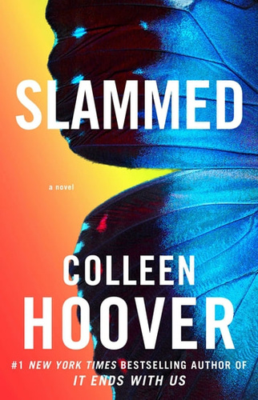
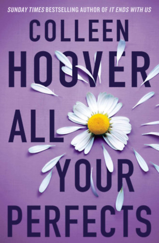
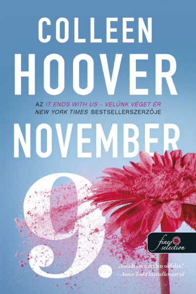
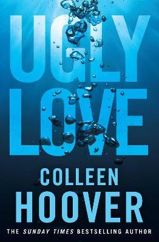

A TOP 4 kedvenc Colleen Hoover könyvemet szeretném bemutatni
A könyv egy romantikus dráma, amely a 18 éves Layken történetét meséli el. Miután édesanyja halála után Layken és a testvérei új városba költöznek, találkozik Will-lel, a szomszéd fiúval, aki szintén nehéz élethelyzetekkel küzd. Ahogy kapcsolatuk egyre mélyebb lesz, kiderül, hogy a szerelem és a fájdalom elkerülhetetlenül összefonódik, miközben mindketten próbálják megoldani a családi és érzelmi problémáikat. A történet központjában a versírás (slam poetry) áll, amely fontos szerepet játszik az önkifejezésben és a gyógyulásban. A könyv a szerelem, a veszteség és a személyes növekedés témáit dolgozza fel, miközben bemutatja, hogy a fiatalok milyen módon birkóznak meg a kihívásokkal és a fájdalommal.
A könyv három részes (ez az első) a történet könyvről könyvre folytatódik és előrehalad a cselekménye.
A könyv egy érzelmekkel teli, drámai történet, amely a házasság, a szerelem és a veszteség témáit járja körül. A regény Quinn és Graham kapcsolatát követi, akiknek házassága az idő előrehaladtával válságba kerül. A pár szeretete erős, de egy sor nehézséggel, köztük termékenységi problémákkal és a múlt titkaival kell szembenézniük. A történet váltakozva meséli el a múltat és a jelent, hogy bemutassa, hogyan alakult a kapcsolatuk, hogyan találják meg újra a reményt és a szeretetet a fájdalom és a csalódások közepette. A könyv a második esélyekről, a megbocsátásról és arról szól, hogyan lehet túlélni a legnehezebb pillanatokat a szeretet és a bizalom segítségével.
Ennek a könyvnek nincs több része, de tökéletesen le van zárva a cselekmény.
A könyv egy romantikus dráma, amely a szerelem, a titkok és a sors kérdéseit vizsgálja. A történet főszereplői Fallon és Ben. Fallon egy fiatal nő, aki egy tragikus esemény után próbál újraépíteni életét, miközben Ben, egy ambiciózus író, megjelenik az életében. A két fiatal között azonnali vonzalom alakul ki, de az életük különböző irányokba tereli őket. Mivel Fallon csalódásokat és fájdalmas élményeket élt át, Ben és Fallon úgy döntenek, hogy minden évben, ugyanazon a napon találkoznak – November 9-én. A könyv a kapcsolatok fejlődését és a személyes növekedést követi, miközben egy sor titok, félreértés és váratlan fordulat bontakozik ki. A regény a szerelem bonyolultságát, az önelfogadást és a múlt hatását a jelenünkre dolgozza fel.
Nincs folytatása, de a történet végén egy hatalmas meglepetés és érzelmi csúcspont várja az olvasót.
A könyv egy erősen érzelmekkel teli és fájdalmas romantikus regény, amely a szerelem és a múlt hatásait vizsgálja. A történet főszereplői Tate és Miles, akik egy intenzív, de bonyolult kapcsolatba keverednek Tate, egy fiatal nő, aki testvére lakásában él, találkozik Miles-szal, a testvére legjobb barátjával. Miles vonzó, de titokzatos férfi, aki mély fájdalmat és tragikus múltat cipel. Eleinte csak testi kapcsolatot keresnek, de hamarosan Tate beleszeret Miles-ba, miközben ő képtelen elengedni a múltját. A történet két idősíkon fut: a jelenben, ahol Tate és Miles kapcsolata fejlődik, és a múltban, ahol Miles története, szenvedései és a tragédia, ami megváltoztatta az életét, fokozatosan kibontakozik. A regény a megbocsátásról, a fájdalom feldolgozásáról és a szerelem hatalmáról szól.
